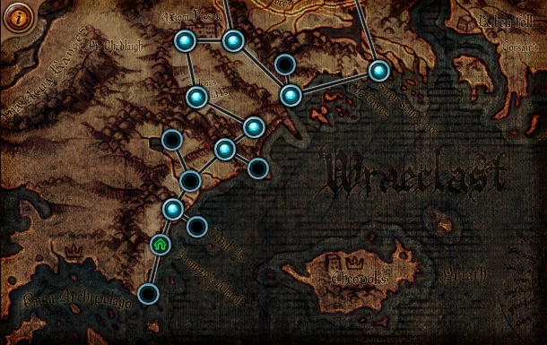
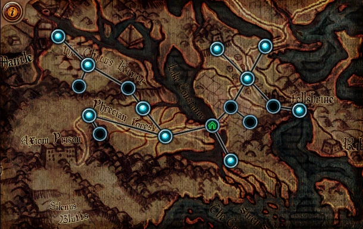
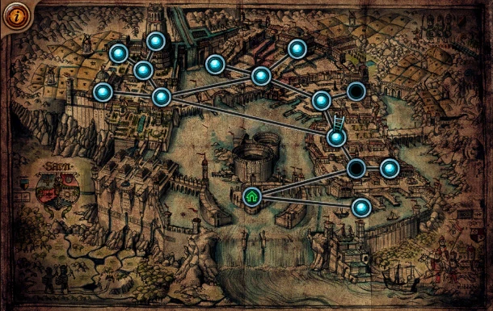
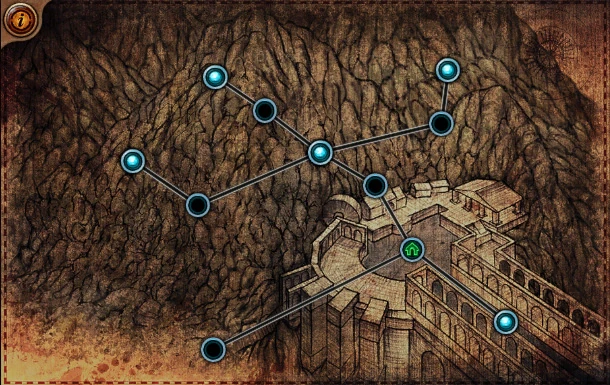
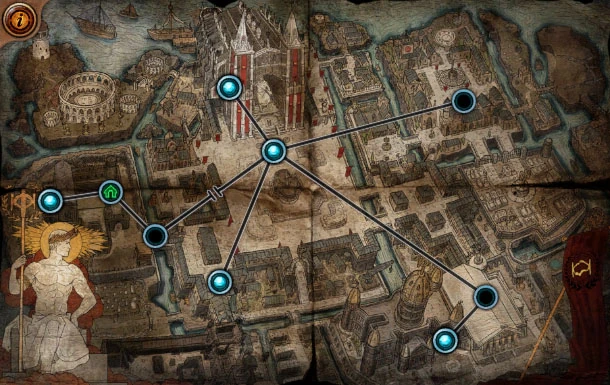
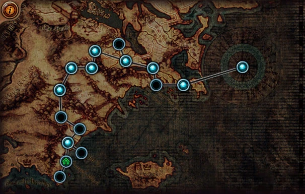
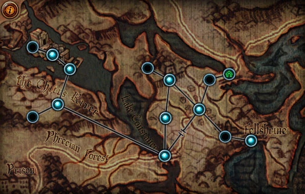
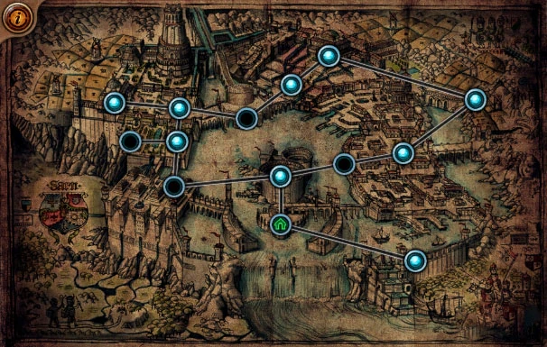
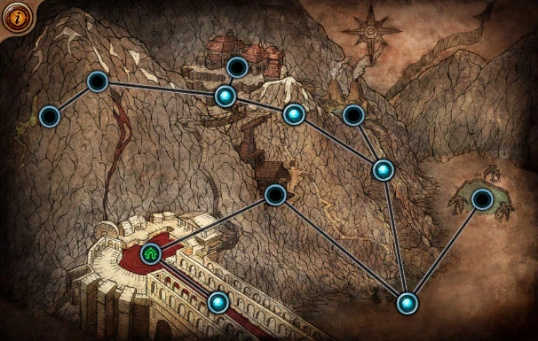
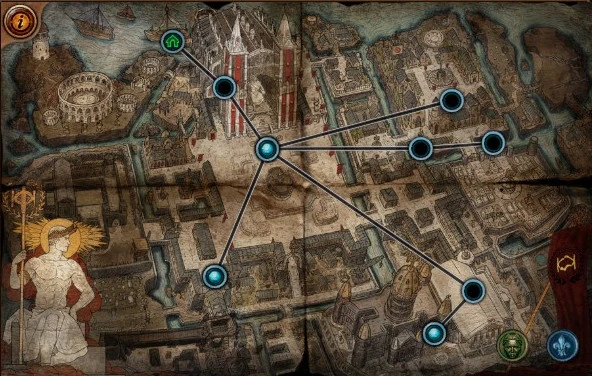

Tasks:
After completing the task, delete them with a click
- The Dweller of the Deep - Defeat the Dweller of the Deep in the Flooded Depths
- The Marooned Mariner - Recover the Allflame and defeat Captain Fairgraves in The Ship Graveyard

Tasks:
After completing the task, delete them with a click
- The Way Forwar - Return to Lioneye’s Watch and speak to any character after clearing the road in Act 2

Tasks:
After completing the task, delete them with a click
- Victario’s Secrets - Find the three Platinum Busts in the Sewers
- Piety’s Pets - Defeat Piety in the The Lunaris Temple Level 2

Tasks:
After completing the task, delete them with a click
- An Indomitable Spirit - Interact with Desheret’s spirit in The Mines Level 2

Tasks:
After completing the task, delete them with a click
- In Service to Science - Find the Miasmeter in the Control Blocks
- Kitava’s Torments - Find Kitava’s Torments in The Reliquary

Tasks:
After completing the task, delete them with a click
- The Father of War - Defeat Tukohama in The Karui Fortresst
- The Puppet Mistress - Defeat Ryslatha in The Wetlands
- The Cloven One - Defeat Alberon in Prisoner’s Gate

Tasks:
After completing the task, delete them with a click
- The Master of a Million Faces - Defeat Ralakesh in The Forest Encampment
- Queen of Despair - Defeat Gruthkul in the Dread Thicket
- Kishara’s Star - Find Kishara’s Star in The Causeway

Tasks:
After completing the task, delete them with a click
- Reflection of Terror - Defeat Yugul in the High Gardens
- Love is Dead - Defeat Tolman at the Quay
- The Gemling Legion - Defeat the Gemling Legion at the Grain Gate

Tasks:
After completing the task, delete them with a click
- The Ruler of Highgate - Defeat Kira then give the Sekhema Feather to either Irasha or Tasuni in Highgate
- Queen of the Sands - Defeat Shakari in The Oasis

Tasks:
After completing the task, delete them with a click
- Vilenta’s Vengeance - Defeat Vilenta in the Control Blocks
- An End to Hunger - Defeat Kitava in the Feeding Trough